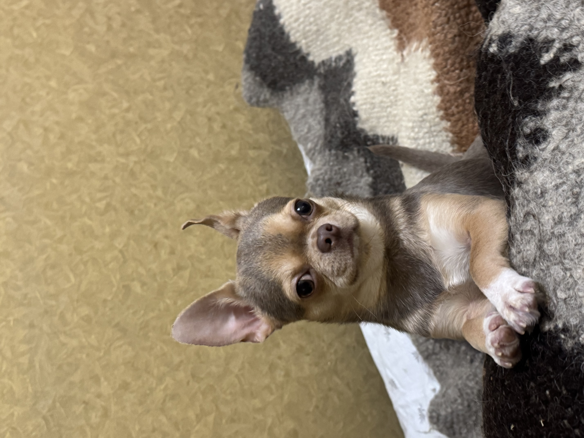

Мій пес Тоні — маленький, але дуже сміливий чіхуахуа з великим серцем. Він завжди поруч зі мною: уважно слухає, коли я говорю, і радіє навіть найменшим дрібницям. Тоні обожнює теплі ковдри, прогулянки та смачні ласощі, а ще — бути в центрі уваги. Незважаючи на свій невеликий розмір, Тоні справжній охоронець і вірний друг. Він відчуває мій настрій, підтримує, коли сумно, і щодня дарує радість. Тоні — не просто собака, він частина моєї родини і мій найкращий хвостатий друг
Удома Тоні — справжній господар: перевіряє кожен звук і пильно стежить, щоб усі були на своїх місцях. А ввечері він із задоволенням згортається клубочком поруч, даруючи тепло і спокій. З Тоні кожен день стає світлішим, адже його любов щира і безмежна.
Тоні має кумедний характер і дуже виразні очі, в яких завжди видно настрій. Коли він радіє — стрибає, мов м’ячик, а коли ображається, смішно відвертається, але довго сердитись не вміє. Він любить, коли з ним розмовляють, і здається, що все розуміє.

Google